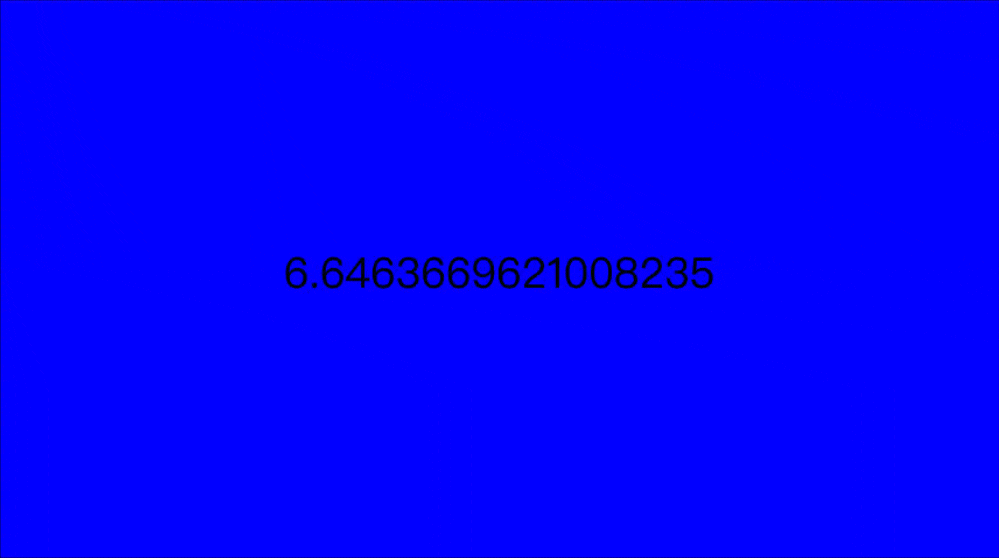
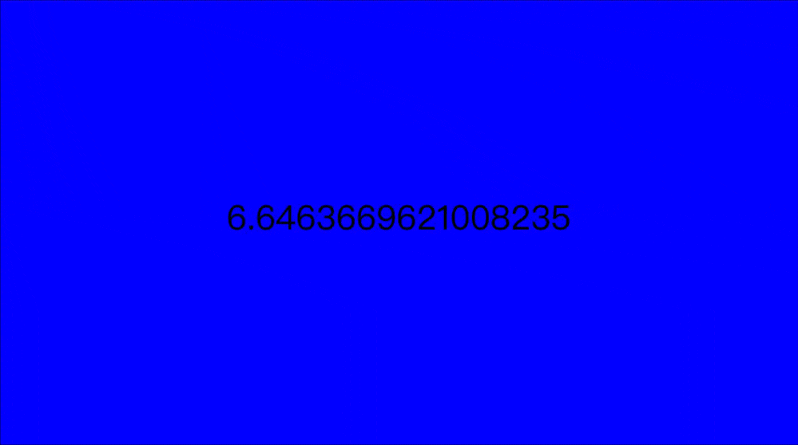

This piece evolves from the in-class practice, now rendered in softer tones and more nuanced shifts in scale.
It is trying to find a balance between color and area in the variations —between what grows and what recedes.
「 In-class activities 」
week4-6
During this three-week journey, I explored the fundamentals of p5.js, learning how to translate abstract logic into visual expression. Along with in-class experiments, I’ve noticed that data is not just as information, but as a material to be shaped, visualized, and felt...

 



「 Yayoi Kusama · NGV 」
In Yayoi Kusama's works, I deeply sense the theme of infinity—whether it's the alternating flashes of light, the boundless world of polka dots, or a room where new flowers keep blooming (which is already overwhelmed by blossoms)... From another perspective, it also feels like repetition and cycles...


「 Self experiment 」


let mic
let smoothSize = 50
function setup() {
createCanvas(windowWidth, windowHeight)
mic = new p5.AudioIn();
mic.start();
}
function draw() {
background(225);
let volume = mic.getLevel();
let circleSize = map (volume, 0, 1, 50, 200);
smoothSize = lerp(smoothSize, circleSize, 0.5);
r = map (volume, 0, 1, 0, 255);
g = map (volume, 0, 1, 100, 200);
b = map (volume, 0, 1, 150, 255);
fill(255, g, b);
circle(width/2, height/2, smoothSize);
print("volume", volume);
noStroke(); }
let smoothSize = 50
function setup() {
createCanvas(windowWidth, windowHeight)
mic = new p5.AudioIn();
mic.start();
}
function draw() {
background(225);
let volume = mic.getLevel();
let circleSize = map (volume, 0, 1, 50, 200);
smoothSize = lerp(smoothSize, circleSize, 0.5);
r = map (volume, 0, 1, 0, 255);
g = map (volume, 0, 1, 100, 200);
b = map (volume, 0, 1, 150, 255);
fill(255, g, b);
circle(width/2, height/2, smoothSize);
print("volume", volume);
noStroke(); }
An attempt at a self-portrait using graphic functions in p5.js... which helped me understand how coordinates are used when creating graphics.